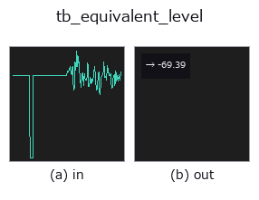

typed op• Data kinds: signal → feature
• Call: fullseye.apply(img, "tb_equivalent_level", a=0.5, b=0.5) (2-D model = एक image + दो scalar knobs a,b∈[0,1])

*Figure synthetic 128×128 input पर सच में चलाकर मिला output है। बाईं ओर input, दाईं ओर output। Point clouds ऊपर से देखे गए scatter के रूप में (brightness = z), 1-D series line के रूप में, volumes z दिशा में maximum-intensity projection के रूप में, videos बीच के frame के रूप में, complex images amplitude के रूप में, और जो return values चित्र नहीं बन सकते वे स्वयं values के रूप में दिखाए जाते हैं।*
Knob a को बदलकर (0.1 / 0.5 / 0.9, दूसरा knob default पर):
▸ tb_equivalent_level: knob a को बदलने का figure (docs site)
*Knob b output नहीं बदलता (मापा गया: 0.1 / 0.5 / 0.9 पर एक जैसा)।*
Stages (पहले आने वाले ops → यह op, बाएँ से क्रम में):
▸ tb_equivalent_level: stages का figure (docs site)
किसी record का energy-equivalent level, ref के सापेक्ष dB में।
> नीचे का विस्तृत विवरण मूल text में है — सारांश और headings का अनुवाद हो चुका है।
L_eq = 10 log10(mean(x_w**2) / ref**2) where x_w is the signal after the chosen weighting. Returns a plain float.
The reference is yours to supply. The default ref=1.0 means dB relative to one unit of the signal's own units; it is not dB SPL, because this library never sees your calibration. Pass ref=20e-6 for pascals.
Measured: a 1 kHz sine of amplitude 1.0 at 16 kHz over exactly 1000 periods gives L_eq = -3.010300 dB with Z weighting, against the closed form 10*log10(1/2) = -3.010300 (difference 2.2e-15 dB), and the same value under A weighting (difference 8.9e-16 dB), because A is 0 dB at 1 kHz. Doubling the amplitude adds 6.020600 dB. Silence returns -200.0.
Silence returns floor_db (default -200) rather than -inf; an -inf in a list of levels destroys every average taken over it afterwards.
A weighted level is only as good as the weighting, and the weighting has a leakage limit this operator inherits in full. A pure tone that is not a whole number of periods in the record comes back too loud — measured +7.7986 dB at 31.5 Hz (a nominal one-third-octave centre) over 0.5 s at 48 kHz, and up to +17.2116 dB at 20.5 Hz — with no exception, no NaN and no warning. weighting="Z" is exempt (it does no filtering) and "C" is nearly so (+0.0493 dB on the same tone); it is "A", whose curve spans about 40 dB across the audio band, that is exposed.
window="hann" is the opt-in remedy: the record is multiplied by a Hann window and the mean square divided by the window's own mean square, which suppresses the leakage almost entirely — the 31.5 Hz error goes from +7.7986 to +0.0534 dB and the 20.5 Hz error from +17.2116 to +0.1841 — while costing about 0.15 dB on records that were exact before. It is not the default, and must not be used when a transient's level is the point: a window makes the answer depend on *where in the record the sound happened*. Measured on a 50 ms burst inside a 0.5 s record (Z weighting, so only the window acts; unwindowed all three are -13.0103 dB as they must be): at the start -36.0587, at the centre -8.8218, at the end -36.0587 — a 27 dB spread produced by nothing but position. Use "hann" for a stationary tonal record, which is exactly the case the leakage ruins, and "none" (the default, an honest energy average) for everything else. The full measurement is in apply_weighting.
Raises ValueError: everything _as_signal refuses, an unknown weighting or window, ref <= 0 (a decibel needs a positive reference; a zero reference makes every level +inf and a negative one makes the ratio negative), rate <= 0.
Typed bridge of the acoustics op equivalent_level into the 2-D evolution registry: the same implementation, called under the op(v, a, b) convention. a drives ref (default 1); b is unused.
• Sample data catalog (DL URL / license) — 2-D के लिए skimage.data (BSD/public) + synthetic, 3-D के लिए real data sources (Stanford/PDS आदि) के DL URL।
• Operators का स्रोत और संदर्भ — इस op family के मूल research/methods के स्रोत।
नीचे का program सच में चलता है, यह जाँचा गया है (figure वाला ही input)। Studio की help में यह block buttons बन जाता है, जिनसे इसे वहीं load करके चलाया जा सकता है।
img_to_signal 0.50 0.50 tb_equivalent_level 0.50 0.50
▸ यह pipeline load करें · Load करके चलाएँ
नीचे के उदाहरण मूल ledger op equivalent_level को call करते हैं। यह bridge op वही implementation है, बस fn(v, a, b) convention के अनुसार ढाला गया है, इसलिए व्यवहार वैसा ही लागू होता है (केवल call का रूप अलग है)।
• acoustic_condition_monitoring — py -3.11 examples/acoustic_condition_monitoring.py
feature को input के रूप में लेते हैं)typed)tb_points_to_voxel · tb_estimate_point_normals · tb_iss_keypoints · tb_project_points · tb_render_point_depth · tb_statistical_outlier_removal · tb_radius_outlier_removal · tb_voxel_grid_downsample
*Provenance: ops.py — 2D operator registry. यह per-op note tools/opdocs.py md से अपने-आप generate होता है (हाथ से edit न करें)।*
© 2026 Kazufumi Furuse — Fullseye operator documentation. Licensed under Apache-2.0.